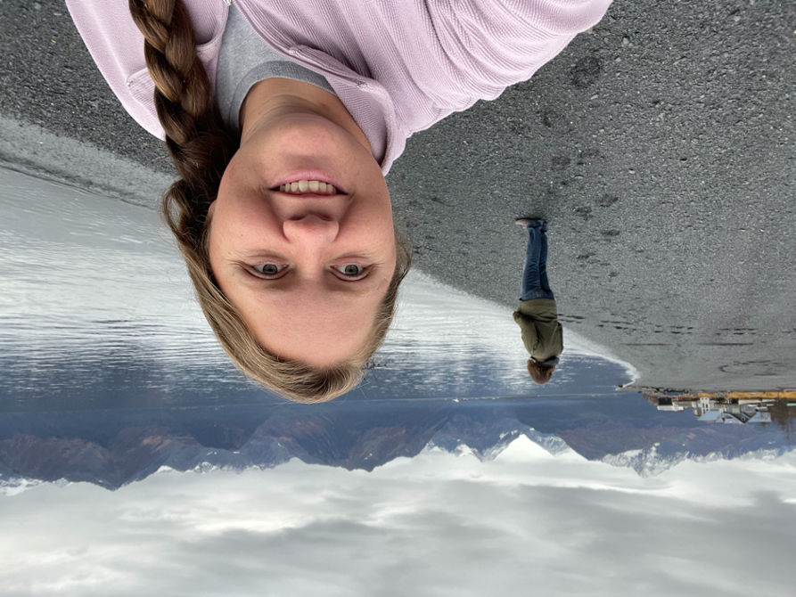
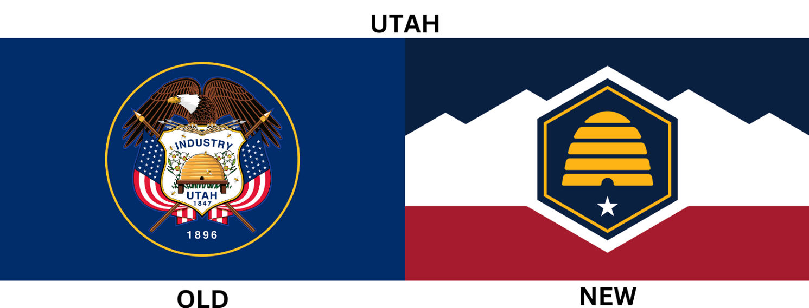

About Me

My name is Alexia White. I am from Beaver, Utah, a place that sometimes feels like the center of the Universe besides when trying to date. I grew up outside of Beaver about 5 to 10 miles in a place called Manderfield which is the birthplace of Philo T. Farnsworth. Philo T. Farnsworth is the person who invented the TV. I have ventured out of Utah and most recently have taken up travel to Alaska to try my hand at fishing and enjoying the beauty there.
Utah
Utah is where the Pioneers finally settled after having been persecuted and driven out of Illinois, Ohio and Missouri. It took 42 years from the time Brigham Young said, "This is the place" to the time Utah became an official state in the United States of America. When the Saints first arrived in the west, the government was a theodemocracy which is where the religious rules is the law by which everything is judged. Eventually, there became seperation between state and church. Recently, the state flag has been updated.
